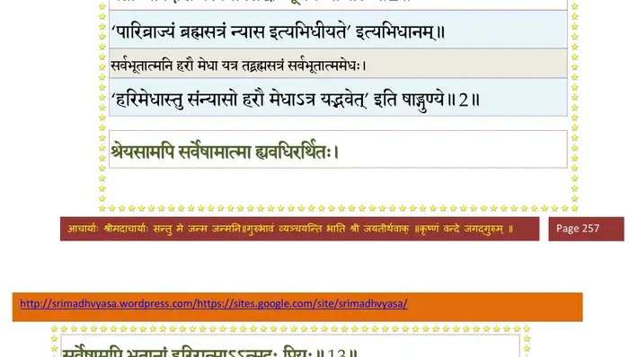
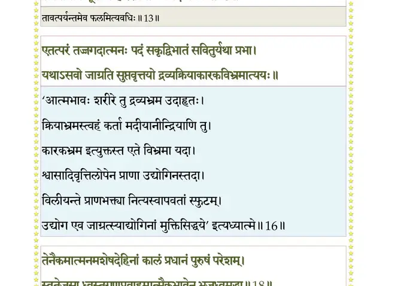
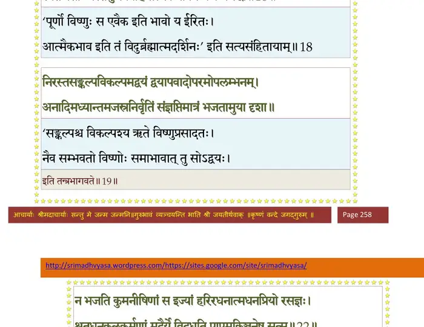
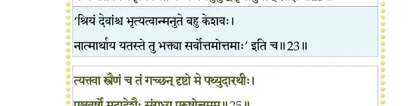
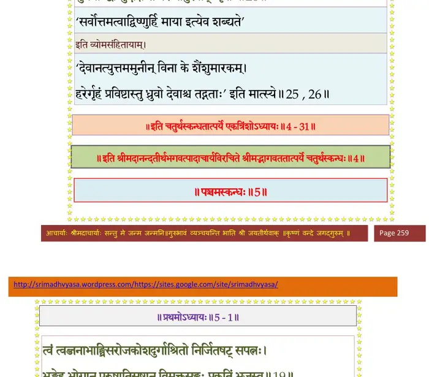

स्कन्ध 4 · अध्याय 31
श्लोक १
मैत्रेय उवाच–
तत उत्पन्नविज्ञाना आश्वधोक्षजभाषितम् ।
स्मरन्त आत्मजे भार्यां विसृज्य प्राव्रजन् गृहात्।। १ ।।
तत उत्पन्नविज्ञाना आश्वधोक्षजभाषितम् ।
स्मरन्त आत्मजे भार्यां विसृज्य प्राव्रजन् गृहात्।। १ ।।
श्लोक २
दीक्षिता ब्रह्मसत्रेण सर्वभूतात्ममेधसा ।
प्रतीच्यां दिशि वेलायां सिद्धोऽभूद् यत्र जाजलिः।। २ ।।
प्रतीच्यां दिशि वेलायां सिद्धोऽभूद् यत्र जाजलिः।। २ ।।
भागवततात्पर्यनिर्णय

श्लोक ३
तान् निर्जितप्राणमनोवचोदृशो जितासनाञ्छान्तसमानविग्रहान् ।
परेऽमले ब्रह्मणि योजितात्मनः सुरासुरेड्यो ददृशे स्म नारदः ।।३।।
परेऽमले ब्रह्मणि योजितात्मनः सुरासुरेड्यो ददृशे स्म नारदः ।।३।।
श्लोक ४
तमागतं त उत्थाय प्रणिपत्याभिनन्द्य च ।
पूजयित्वा यथादेशं सुखासीनमथाब्रुवन्।। ४ ।।
पूजयित्वा यथादेशं सुखासीनमथाब्रुवन्।। ४ ।।
श्लोक ५
स्वागतं ते सुरर्षेऽद्य दिष्ट्या नो दर्शनं गतः ।
तव चङ्क्रमणं ब्रह्मन्नभयाय यथा रवेः।। ५ ।।
तव चङ्क्रमणं ब्रह्मन्नभयाय यथा रवेः।। ५ ।।
श्लोक ६
यदादिष्टं भगवता शिवेनाधोक्षजेन च ।
तद् गृहेषु प्रसक्तानां प्रायशः क्षपितं प्रभो।। ६ ।।
तद् गृहेषु प्रसक्तानां प्रायशः क्षपितं प्रभो।। ६ ।।
श्लोक ७
तन्नः प्रद्योतयाध्यात्मज्ञानं तत्त्वार्थदर्शनम् ।
येनाञ्जसा तरिष्यामो दुस्तरं भवसागरम्।। ७ ।।
येनाञ्जसा तरिष्यामो दुस्तरं भवसागरम्।। ७ ।।
श्लोक ८
मैत्रेय उवाच–
इति प्रचेतसा पृष्टो भगवान् नारदो मुनिः ।
भगवत्युत्तमश्लोक आविष्टात्माऽब्रवीन्नृपान्।। ८ ।।
इति प्रचेतसा पृष्टो भगवान् नारदो मुनिः ।
भगवत्युत्तमश्लोक आविष्टात्माऽब्रवीन्नृपान्।। ८ ।।
श्लोक ९
नारद उवाच–
तज्जन्म तानि कर्माणि तदायुस्तन्मनो वचः ।
नृणां येन हि विश्वात्मा सेव्यते हरिरीश्वरः।। ९ ।।
तज्जन्म तानि कर्माणि तदायुस्तन्मनो वचः ।
नृणां येन हि विश्वात्मा सेव्यते हरिरीश्वरः।। ९ ।।
श्लोक १०
किं जन्मभिस्त्रिभिर्वेह शुक्लसावित्रयाज्ञिकैः ।
कर्मभिर्वा त्रयीप्रोक्तैः पुंसोऽपि विबुधायुषः।। १० ।।
कर्मभिर्वा त्रयीप्रोक्तैः पुंसोऽपि विबुधायुषः।। १० ।।
श्लोक ११
श्रुतेन तपसा वा किं वचोभिश्चित्तवृत्तिभिः ।
बुद्ध्या वा किं निपुणया बलेनेन्द्रियराधसा।। ११ ।।
बुद्ध्या वा किं निपुणया बलेनेन्द्रियराधसा।। ११ ।।
श्लोक १२
किं वा योगेन सांख्येन न्यासस्वाध्याययोरपि ।
किं वा श्रेयोभिरन्यैश्च न यत्रात्मप्रदो हरिः।। १२ ।।
किं वा श्रेयोभिरन्यैश्च न यत्रात्मप्रदो हरिः।। १२ ।।
श्लोक १३
श्रेयसामपि सर्वेषामात्मा ह्यवधिरर्थितः ।
सर्वेषामपि भूतानां हरिरात्माऽऽत्मदः प्रियः।। १३ ।।
सर्वेषामपि भूतानां हरिरात्माऽऽत्मदः प्रियः।। १३ ।।
भागवततात्पर्यनिर्णय

श्लोक १४
यथा तरोर्मूलनिषेचनेन तृप्यन्ति तत्स्कन्धभुजोपशाखाः ।
प्राणोपहाराच्च यथेन्द्रियाणां तथैव सर्वार्हणमच्युतेज्या।। १४ ।।
प्राणोपहाराच्च यथेन्द्रियाणां तथैव सर्वार्हणमच्युतेज्या।। १४ ।।
श्लोक १५
यथैव सूर्यात् प्रभवन्ति गावः पुनश्च तस्मिन् प्रविशन्ति काले ।
भूतानि भूमौ स्थिरजङ्गमानि तथा हरावेव गुणप्रवाहः।। १५ ।।
भूतानि भूमौ स्थिरजङ्गमानि तथा हरावेव गुणप्रवाहः।। १५ ।।
श्लोक १६
एतत् परं तज्जगदात्मनः पदं सकृद् विभातं सवितुर्यथा प्रभा ।
यदाऽसवो जाग्रति सुप्तवृत्तयो द्रव्यक्रियाकारकविभ्रमात्ययः।। १६ ।।
यदाऽसवो जाग्रति सुप्तवृत्तयो द्रव्यक्रियाकारकविभ्रमात्ययः।। १६ ।।
श्लोक १७
यथा नभस्यभ्रतमःप्रकाशा भवन्ति भूयो न भवन्त्यनुक्रमात् ।
एवं परे ब्रह्मणि शक्तयस्त्वमू रजस्तमस्सत्वमिति प्रवाहः।। १७ ।।
एवं परे ब्रह्मणि शक्तयस्त्वमू रजस्तमस्सत्वमिति प्रवाहः।। १७ ।।
श्लोक १८
तेनैकमात्मानमशेषदेहिनां कालं प्रधानं पुरुषं परेशम् ।
स्वतेजसा ध्वस्तगुणप्रवाहमात्मैकभावेन भजध्वमद्धा।। १८ ।।
स्वतेजसा ध्वस्तगुणप्रवाहमात्मैकभावेन भजध्वमद्धा।। १८ ।।
भागवततात्पर्यनिर्णय

श्लोक २०
निरस्तसङ्कल्पविकल्पमद्वयं द्वयापवादोपरमोपलम्भनम् ।
अनादिमध्यान्तमजस्रनिर्वृतिं सञ्ज्ञप्तिमात्रं भजताऽमुया दृशा।। १९
दयया सर्वभूतेषु सन्तुष्ट्या येन केन वा ।
सर्वेन्द्रियोपशान्त्या च तुष्यत्याशु जनार्दनः।। २० ।।
अनादिमध्यान्तमजस्रनिर्वृतिं सञ्ज्ञप्तिमात्रं भजताऽमुया दृशा।। १९
दयया सर्वभूतेषु सन्तुष्ट्या येन केन वा ।
सर्वेन्द्रियोपशान्त्या च तुष्यत्याशु जनार्दनः।। २० ।।
श्लोक २२
अपगतसकलेषणामलात्मन्यविरतमेधितभावनोपहूतः ।
निजजनवशगत्वमाप्तवान् यो न सरति च्छिद्रवदक्षरः सतां हि।।२१
न भजति कुमनीषिणां स इज्यां हरिरधनात्मधनप्रियो रसज्ञः ।
श्रुतधनकुलकर्मणां मदैर्ये विदधति पापमकिञ्चनेषु सत्सु।। २२ ।।
निजजनवशगत्वमाप्तवान् यो न सरति च्छिद्रवदक्षरः सतां हि।।२१
न भजति कुमनीषिणां स इज्यां हरिरधनात्मधनप्रियो रसज्ञः ।
श्रुतधनकुलकर्मणां मदैर्ये विदधति पापमकिञ्चनेषु सत्सु।। २२ ।।
भागवततात्पर्यनिर्णय
श्लोक २४
श्रियमनुचरतीं तदर्थिनश्च द्विपदपतीन् विबुधांश्च यः स्वपूर्णः ।
न भजति निजभृत्यवर्गतन्त्रः कथममुमुद्विसृजेत् पुमान् कृतज्ञः।।२३
भवतां वंशधुर्योऽभूद् ध्रुवश्चित्ररथः स्वराट् ।
गुरुदारवचोबाणैर्निर्भिन्नहृदयोऽर्भकः।। २४ ।।
न भजति निजभृत्यवर्गतन्त्रः कथममुमुद्विसृजेत् पुमान् कृतज्ञः।।२३
भवतां वंशधुर्योऽभूद् ध्रुवश्चित्ररथः स्वराट् ।
गुरुदारवचोबाणैर्निर्भिन्नहृदयोऽर्भकः।। २४ ।।
भागवततात्पर्यनिर्णय

श्लोक २५
त्यक्त्वा स्त्रैणं च तं गच्छन् दृष्टो मे पथ्युदारधीः ।
पञ्चवर्षो मदादेशैः संराध्य पुरुषेश्वरम्।। २५ ।।
पञ्चवर्षो मदादेशैः संराध्य पुरुषेश्वरम्।। २५ ।।
भागवततात्पर्यनिर्णय
श्लोक २६
तत् परं सर्वधिष्ण्येभ्यो मायाधिष्ठितमारुहत् ।
मुनयोऽद्याप्युदीक्षन्ते परं नापुरवाङ् नृपाः।। २६ ।।
मुनयोऽद्याप्युदीक्षन्ते परं नापुरवाङ् नृपाः।। २६ ।।
भागवततात्पर्यनिर्णय

श्लोक २७
तं यूयं सर्वभूतानामन्तर्यामिणमीश्वरम् ।
रुद्रादिष्टोपदेशेन भजध्वं भवनुत्तये।। २७ ।।
रुद्रादिष्टोपदेशेन भजध्वं भवनुत्तये।। २७ ।।
श्लोक २८
मैत्रेय उवाच–
इति प्रचेतसो राजन्नन्यांश्च भगवत्कथाः ।
श्रावयित्वा ब्रह्मलोकं ययौ स्वायम्भुवो मुनिः।। २८ ।।
इति प्रचेतसो राजन्नन्यांश्च भगवत्कथाः ।
श्रावयित्वा ब्रह्मलोकं ययौ स्वायम्भुवो मुनिः।। २८ ।।
श्लोक २९
तेऽपि तन्मुखनिर्यातं यशो लोकमलापहम् ।
हरेर्निशम्य तत्पादं ध्यायन्तस्तद्गतिं ययुः।। २९ ।।
हरेर्निशम्य तत्पादं ध्यायन्तस्तद्गतिं ययुः।। २९ ।।
श्लोक ३०
एतत् तेऽभिहितं क्षत्तर्यन्मां त्वं परिपृष्टवान् ।
प्रचेतसां नारदस्य संवादे हरिकीर्तनम्।। ३० ।।
प्रचेतसां नारदस्य संवादे हरिकीर्तनम्।। ३० ।।
श्लोक ३१
य एष उत्तानपदो मानवस्यानुवर्णितः ।
वंशं प्रियव्रतस्यापि निबोध नृपसत्तम।। ३१ ।।
वंशं प्रियव्रतस्यापि निबोध नृपसत्तम।। ३१ ।।
श्लोक ३२
यो नारदादात्मविद्यामधिगम्य पुनर्महीम् ।
भुक्तवा विभज्य पुत्रेभ्य ऐश्वरं समगात् पदम्।। ३२ ।।
भुक्तवा विभज्य पुत्रेभ्य ऐश्वरं समगात् पदम्।। ३२ ।।
श्लोक ३३
इत्थं तु कौषारविणोपवर्णितां क्षत्ता निशम्याजितपादसत्कथाम् ।
प्रवृद्धभावाश्रुकलाकुलो मुनेः दधार मूर्ध्ना चरणं हृदा हरेः।। ३३ ।।
प्रवृद्धभावाश्रुकलाकुलो मुनेः दधार मूर्ध्ना चरणं हृदा हरेः।। ३३ ।।
श्लोक ३४
विदुर उवाच–
सोऽयं तेन महायोगिन् भवता करुणात्मना ।
दर्शितस्तमसः पारो यत्राकिञ्चनगो हरिः।। ३४ ।।
सोऽयं तेन महायोगिन् भवता करुणात्मना ।
दर्शितस्तमसः पारो यत्राकिञ्चनगो हरिः।। ३४ ।।
श्लोक ३५
श्रीशुक उवाच–
इत्यानम्य तमामन्त्र्य विदुरो गजसाह्वयम् ।
स्वानां दिदृक्षुः प्रययौ ज्ञातीनां निर्वृताशयः।। ३५ ।।
इत्यानम्य तमामन्त्र्य विदुरो गजसाह्वयम् ।
स्वानां दिदृक्षुः प्रययौ ज्ञातीनां निर्वृताशयः।। ३५ ।।
श्लोक ३६
एतद् यः शृृणुयाद् राजन् राज्ञां हर्यर्पितात्मनाम् ।
आयुर्धनं यशः स्वस्ति गतिमैश्वर्यमाप्नुयात्।। ३६ ।।
आयुर्धनं यशः स्वस्ति गतिमैश्वर्यमाप्नुयात्।। ३६ ।।
।। इति श्रीमद्भागवते चतुर्थस्कन्धे एकत्रिंशोऽध्यायः ।।